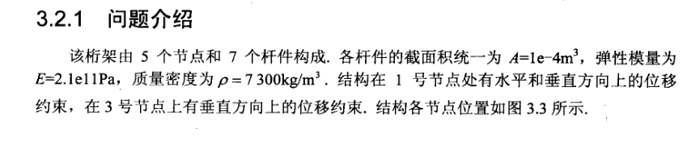
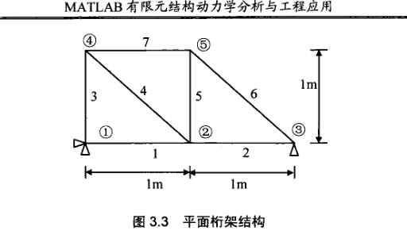
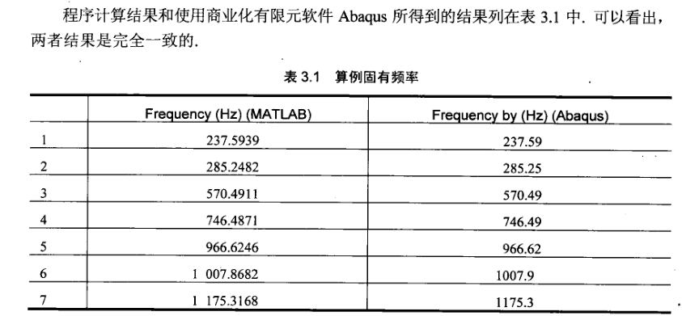
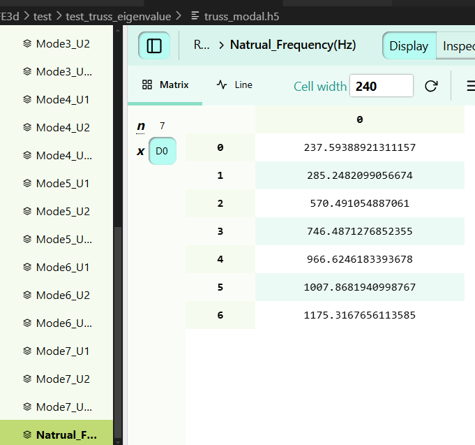

Matlab特征值求解: 简单平面桁架
问题描述


matlab计算程序
% 材料与几何参数
E = 2.1e11; % 弹性模量 (Pa)，钢的典型值
A = 1e-4; % 杆件截面积 (m²)
density = 7.3e3; % 材料密度 (kg/m³)，钢的密度
node_number = 5; % 节点总数
element_number = 7; % 单元总数
% 节点坐标矩阵 [x1,y1; x2,y2; ...]
nc = [0,0; 1,0; 2,0; 0,1; 1,1]; % 节点1-5的坐标
% 单元-节点拓扑关系 [起始节点, 结束节点]
en = [1,2; 2,3; 1,4; 2,4; 2,5; 3,5; 4,5]; % 定义7个杆件单元
% 初始化自由度状态矩阵 (1=自由, 0=固定)
ed = ones(node_number, 2); % ed(i,j): 节点i在j方向的状态 (j=1:x, j=2:y)
% 定义约束 [节点号, 方向] (方向1:x, 2:y)
constraint = [1,1; 1,2; 3,2]; % 节点1固定x和y，节点3固定y
% 应用约束：将ed对应位置置0
for loopi = 1:length(constraint)
ed(constraint(loopi,1), constraint(loopi,2)) = 0;
end
% 分配全局自由度编号 (仅对未约束的自由度)
dof = 0; % 自由度计数器
for loopi = 1:node_number
for loopj = 1:2
if ed(loopi,loopj) ~= 0
dof = dof + 1;
ed(loopi,loopj) = dof; % 分配全局编号
end
end
end
% 初始化单元参数
el = zeros(1,7); % 存储每个单元的长度
theta = zeros(1,7); % 存储每个单元的角度（弧度）
e2s = zeros(1,4); % 单元自由度到系统自由度的映射
% 定义局部坐标系下的单元刚度矩阵 (4x4, 杆件轴向刚度)
ek = E*A*[1 0 -1 0; % 局部刚度矩阵 (忽略横向自由度)
0 0 0 0;
-1 0 1 0;
0 0 0 0];
% 定义局部坐标系下的单元质量矩阵 (集中质量模型)
em = (density*A)/2 * eye(4); % 质量均分到两端节点
% 初始化全局刚度矩阵和质量矩阵
k = zeros(dof, dof); % 结构刚度矩阵
m = zeros(dof, dof); % 结构质量矩阵
% 遍历所有单元，组装全局矩阵
for loopi = 1:element_number
% 获取单元自由度映射 (e2s: [u1x, u1y, u2x, u2y]的系统编号)
for zi = 1:2
e2s((zi-1)*2 + 1) = ed(en(loopi,zi), 1); % 节点x方向
e2s((zi-1)*2 + 2) = ed(en(loopi,zi), 2); % 节点y方向
end
% 计算单元长度和角度
dx = nc(en(loopi,2),1) - nc(en(loopi,1),1);
dy = nc(en(loopi,2),2) - nc(en(loopi,1),2);
el(loopi) = sqrt(dx^2 + dy^2); % 单元长度
theta(loopi) = atan2(dy, dx); % 单元角度（弧度）
% 坐标转换矩阵 (局部→全局)
lmd = [cos(theta(loopi)), sin(theta(loopi));
-sin(theta(loopi)), cos(theta(loopi))];
t = [lmd, zeros(2); zeros(2), lmd]; % 4x4转换矩阵
% 转换刚度矩阵和质量矩阵到全局坐标系
dk = t' * ek * t / el(loopi); % 全局刚度矩阵
dm = t' * em * t * el(loopi); % 全局质量矩阵
% 组装到全局矩阵 (忽略固定自由度)
for jx = 1:4
for jy = 1:4
if (e2s(jx) ~= 0 && e2s(jy) ~= 0) % 仅组装自由自由度
k(e2s(jx), e2s(jy)) = k(e2s(jx), e2s(jy)) + dk(jx,jy);
m(e2s(jx), e2s(jy)) = m(e2s(jx), e2s(jy)) + dm(jx,jy);
end
end
end
end
% 求解广义特征值问题: K*V = M*V*D
[v, d] = eig(k, m); % v: 特征向量矩阵, d: 特征值对角矩阵
% 计算固有频率 (Hz)
frequency = sqrt(diag(d)) / (2*pi); % 特征值=ω², ω=2πf
% 按频率升序排序
[frequency, indexf] = sort(frequency);
d = d(:, indexf); % 重排特征值
v = v(:, indexf); % 重排特征向量计算结果
- matlab

